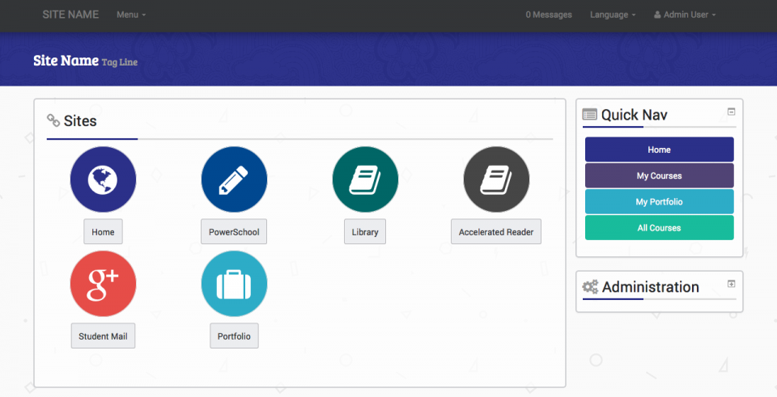

It’s been a whirlwind few months in the Moodle theme community. Julian Ridden released a new theme, Elegance which garnered a massive amount of downloads as well as a TON of forum posts and issues at github. This was partly Julian’s fault because he labeled the theme as STABLE when it really should have been BETA or even ALPHA, but this also happens with stuff that’s labeled ALPHA too- people see it, want to try it, and are surprised when stuff doesn’t work. Then a few child themes / clones were created, notably elegantchild, and a few people even helped fix bugs!
And then something happened that nobody expected; Julian announced that he would stop development on all of his plugins and be leaving the Moodle community for Ruby~ier pastures- namely to work for Instructure’s Canvas LMS. I gotta say, it sounds like an awesome gig! I would have loved to have been on the ground floor of Moodle and we here at iyWare sincerely wish him the best at his new job.
But that sudden departure left a huge hole in the Moodle community and specifically in the support department for the Elegance theme. Which is a bummer, and on a personal note, we had just arranged with several clients to do a roll-out to Elegance on 2.7 two days before the announcement was made, d’oh! We figured, since we were already going to be supporting Elegance for some of our clients for the foreseeable future (until we could get them onto something actively developed at least) we should push our changes to the community. Some people liked this, some people didn’t.
Well, today I’m pleased to announce that we are now officially, and with the blessing of Julian and the Moodle Plugin Liaison David Mudrak, the lead developers of the Elegance theme for Moodle. We don’t currently have a lot of short-term plans for Elegance, other than fixing regressions introduced in 2.7 and patching existing bugs, but we do have some ideas coming down the road.
Now you may be thinking to yourself, “what about Simplex?”. Yeah, we’re a little behind on that- but I’m happy to say that Elegance will be the main theme plugin for the Simplex project! Remember the Simplex project is about primary school users and a touch friendly interface for Moodle. We really think that Elegance (and Bootstrap 3) are a step in the right direction. And along those lines we do have a couple of plugins for Simplex in the pipeline now and they should be out soon. Of course our goal is not for them to be dependent on theme_elegance so they should work with any theme! Here’s a sneak peek of a front-page interface:
